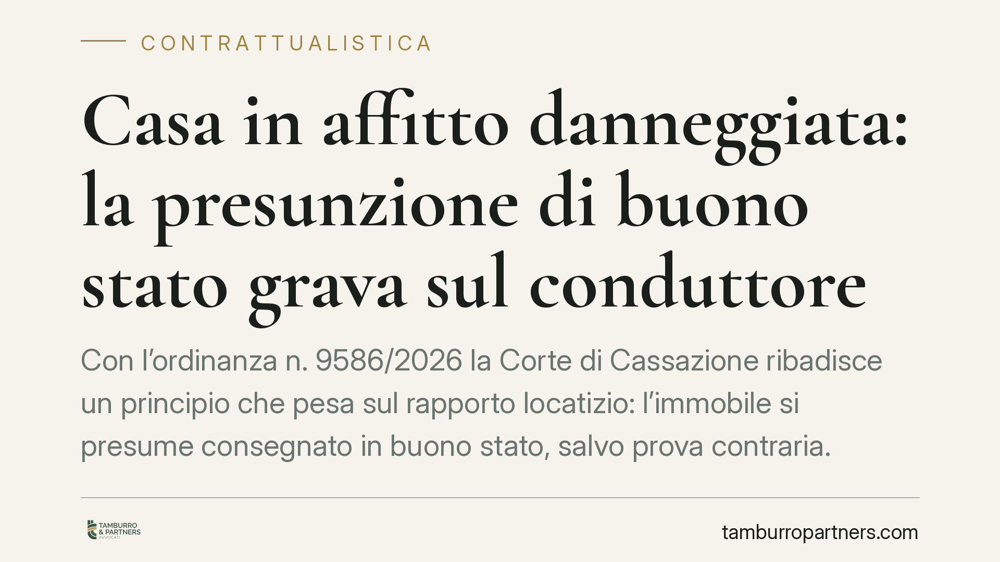

Casa in affitto danneggiata: la presunzione di buono stato grava sul conduttore
Con l'ordinanza n. 9586/2026 la Corte di Cassazione ribadisce un principio che pesa sul rapporto locatizio: l'immobile si presume consegnato in buono stato, salvo prova contraria. Il conduttore che restituisce la casa danneggiata deve dimostrare che i difetti preesistevano. Il locatore, invece, deve provare rigorosamente il danno da mancati canoni. Un chiarimento rilevante soprattutto per chi stipula contratti verbali.

Il principio affermato
La Terza Sezione Civile della Cassazione, con l'ordinanza n. 9586 depositata il 10 aprile 2026, torna a occuparsi della ripartizione dell'onere probatorio nelle controversie tra locatore e conduttore al termine della locazione.
Il punto centrale è questo: quando il conduttore riconsegna l'immobile in condizioni deteriorate, non spetta al locatore provare che la casa fosse integra al momento della consegna. È il conduttore a dover dimostrare che i difetti esistevano già prima dell'inizio del rapporto. La Corte estende tale regola anche ai contratti di locazione stipulati in forma verbale.
Inquadramento normativo
La decisione poggia sull'articolo 1590 del Codice Civile. La norma stabilisce che il conduttore deve restituire la cosa locata "nello stato medesimo in cui l'ha ricevuta", salvo il deterioramento o il consumo risultante dall'uso della cosa in conformità del contratto.
Il secondo comma introduce la presunzione decisiva: "In mancanza di descrizione, si presume che il conduttore abbia ricevuto la cosa in buono stato di manutenzione." È una presunzione *relativa* (iuris tantum): ammette prova contraria, ma sposta il peso dell'allegazione e della dimostrazione sul conduttore.
La Cassazione chiarisce che tale presunzione non richiede la forma scritta del contratto per operare. Anche nelle locazioni verbali, in assenza di un verbale di consegna o di uno stato descrittivo dei luoghi, l'immobile si considera consegnato in buono stato. La mancanza di documentazione iniziale, quindi, non avvantaggia il conduttore: al contrario, lo espone.
Il distinguo sul danno da mancati canoni
La Corte opera però una distinzione importante. La presunzione dell'art. 1590 riguarda lo stato dell'immobile. Non si estende alla pretesa risarcitoria del locatore per i canoni che non ha potuto incassare a causa dell'inagibilità dei locali durante i lavori di ripristino.
Per questa voce di danno vale la regola generale dell'art. 2697 c.c.: chi chiede il risarcimento deve provare il danno e il nesso causale. Il locatore deve quindi dimostrare, in modo rigoroso, di aver effettivamente perso occasioni di nuova locazione, i tempi dei lavori e l'impossibilità di affittare nel frattempo. Non basta affermare un pregiudizio: va quantificato e documentato.
Implicazioni pratiche
Per il conduttore, l'assenza di un verbale di consegna si traduce in un rischio concreto. Senza documentazione dello stato iniziale, contestare addebiti per danni al termine del rapporto diventa difficile: dovrà provare, spesso a distanza di anni, che quei difetti erano preesistenti.
Per il locatore, la pronuncia conferma una posizione favorevole sul fronte dei danni materiali. Resta però esposto sul versante del lucro cessante: pretendere canoni "persi" senza prove solide significa vedersi respingere la domanda.
In entrambi i casi emerge il valore della documentazione iniziale. Un verbale di consegna dettagliato, corredato di fotografie datate, sterilizza gran parte del contenzioso futuro, perché rende la presunzione dell'art. 1590 superflua: lo stato dei luoghi è semplicemente provato.
Cosa fare in concreto
- Redigete un verbale di consegna all'inizio e alla fine della locazione, descrivendo lo stato di ogni ambiente e degli impianti. Valido anche per i contratti verbali.
- Documentate con fotografie datate le condizioni dell'immobile, archiviandole in modo verificabile (ad esempio con metadati o invio via PEC a sé stessi).
- Se siete conduttori, segnalate per iscritto eventuali difetti preesistenti subito dopo la consegna, conservando la comunicazione.
- Se siete locatori e intendete chiedere il risarcimento per mancati canoni, raccogliete prove della perdita: preventivi dei lavori, durata dell'inagibilità, offerte di locazione sfumate.
- Prima di avviare o resistere a una causa, valutate la solidità probatoria della vostra posizione: la presunzione aiuta, ma non sostituisce la prova del danno economico.
---
*Contributo informativo a cura di Tamburro & Partners - Avv. Giuseppe Tamburro. Non costituisce parere legale.*
Ogni contratto ha il suo equilibrio.
Se vuoi una revisione delle clausole o una redazione su misura, scrivi allo studio. Ti rispondiamo entro un giorno lavorativo.